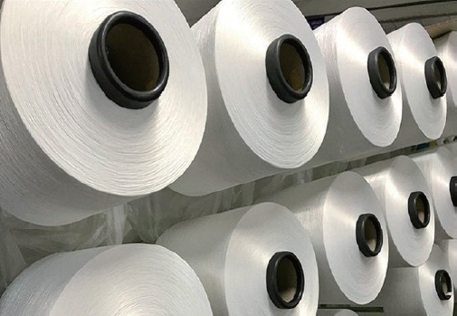

사업영역
상사
trade화학
CHEMICAL INDUSTRY
50년 이상 축적된 기술과 노하우로 시장의 흐름을 주도하고
있습니다.
코오롱글로벌은 최고 품질의 화학 원료 및 완제품을 세계
각국에 공급하고 있습니다
석유화학의 Up-stream 및 Down-stream에 걸쳐 다양한 화학 소재 및 원료를 수출입하고 있습니다. 폴리머를 비롯한 원사, 필름, 타이어코드, 비료, PU(폴리우레탄) 소재, 정밀화학, 의약품, 범용 수지, 석유수지, 페놀수지, 에폭시수지 등 광범위하게 화학 제품을 취급하고 있으며, 오랜 기간 동안 구축된 탄탄한 파트너와의 신뢰를 바탕으로 안정적인 사업 구조를 갖추고 있습니다. 앞으로도 신규 시장 확대와 사업영역 확장을 통해 화학 업계의 선두 주자로 나아갈 것입니다.
1. 화섬원료
- 
전문 인력과 오랜 기간 동안 축적된 노하우로 국내외의 유수한 바이어들에게 공급하고 있습니다.
기술개발 및 신규시장 확대와 사업 영역 확장을 통해 화학업계의 선두주자로 나아갈 것입니다.
사업내용
국내외 글로벌 제조사의 전략적 파트너십을 바탕으로 고품질 화학원료 제품을 국내 및 전세계에 안정적으로 공급하고 있습니다.
- PET Chip Bottle / Fiber / Film 용도
- Nylon Chip Fiber / Film / Compounding 용도
- Fiber Polyester & Nylon 장섬유 / 단섬유
- 친환경 재생 PET Chip (Bottle, Sheet, Filament용) / PET Flake
사업문의 질문이나 상담을 원하시면 전화로 문의 부탁드립니다.
| 업무 | 담당 | 연락처 |
|---|---|---|
| 화섬원료 | 김태형 주임 | 02-3677-5677 |
2. 비료화학

전세계적으로 식량자원의 중요성이 대두됨에 따라 향후 꾸준한 성장이 전망되는 산업입니다.
사업내용
과거 수십년 동안의 풍부하고 전문화된 비료 및 농약 트레이딩(수출, 수입, 오퍼, 삼국간 거래) 노하우를 바탕으로, 다양한 고객의 요구를 만족시킬 수 있는 세심하 고 신속한 서비스를 제공함으로써, 당신의 성공적인 비료 비즈니스 수행의 동반자가 되어 드리겠습니다. 국내외 유수의 비료 및 농약 제조업체와 협업하여 브랜드 마케팅을 통해 제품 판매망을 더욱 공고히 하고 있으며, 신규 시장 및 친환경 제품 개발을 통해 더욱 비료화학 사업을 고도화하고 있습니다. 주요 취급 제품은 NPK, DAP, AS(Ammonium Sulphate), ASN(Ammonium Sulphate Nitrate), 요소, SOP, MOP, NA(Nitric Acid), 제초제 등입니다.
사업문의 질문이나 상담을 원하시면 전화로 문의 부탁드립니다.
| 업무 | 담당 | 연락처 |
|---|---|---|
| 비료화학 | 최웅 대리 | 02-3677-5668 |
3. 산업소재/수지

사업내용
- 석유수지 석유수지는 생활 속 다양한 곳에서 고객의 삶의 질을 향상시키는데 유용하게 사용 되고 있습니다. 자동차와 사람이 안전하게 다닐 수 있도록 찻길에 칠해진 도로표 시제, 포장용으로 사용되는 점착 테이프, 각종 플라스틱 또는 고무의 개질을 위한 첨가제 그리고 인쇄 잉크 등 우리 주변에서 점,접착성이 필요한 제품에는 석유수 지가 사용됩니다.
- 페놀수지 페놀수지는 우리가 운전하는 자동차, 살고 있는 집, 걷고 있는 거리, 업무에 사용 하는 컴퓨터, 난방기구 등 주위에서 언제나 찾을 수 있습니다. 뿐만 아니라, 친환 경 물질을 이용한 전자재료 등 첨단소재에도 많이 이용되고 있습니다.
- 합성수지 제품 전문지식과 마케팅 노하우를 바탕으로 범용수지, ABS, 엔지니어링플라스틱 등으로 고객의 니즈를 충족시키고 있습니다. 주요 취급제품으로는 PP, PS, POM, ABS 등이 있습니다.
사업문의 질문이나 상담을 원하시면 전화로 문의 부탁드립니다.
| 업무 | 담당 | 연락처 |
|---|---|---|
| 산업소재/수지 | 김성환 과장 | 02-3677-5667 |
4. 정밀화학/의약
사업내용
- 정밀화학 저희 코오롱글로벌은 제품에 대한 전문지식과 마케팅 노하우를 바탕으로 가소제, 고흡수성 수지 및 다양한 산업용도의 폴리머 및 레진에 대한 고객 욕구를 만족시키 고 있습니다.저희는 세계 각국의 파트너들과 구축한 신뢰감 및 양질의 대 고객 서비스를 통한 고객만족을 이끄는 회사로 자리매김 하고 있습니다. 주요 취급제품으로 는 가소제, 알루미늄호일, PPSF 등이 있습니다.
- 의약 의약 의약품 완제품, 원료 및 중간체 등을 수출하고 있습니다. 의약품 완제품은 전문의약품 및 일반의약품 모두 취급하고 있으며, 해외 대형 유 통업체와 협업하여 계속 사업을 확대해 나가고 있습니다. 의약품 수출에 국한되지 않고, 건강기능식품 및 화장품 수출 사업으로 계속 사업을 확장해 나가고 있습니다.
사업문의 질문이나 상담을 원하시면 전화로 문의 부탁드립니다.
| 업무 | 담당 | 연락처 |
|---|---|---|
| 정밀화학/의약 | 이효정 대리 | 02-3677-4654 |
철강
STEEL INDUSTRY전문 인력과 글로벌 네트워크로 세계 철강 산업의 수요와 공급 흐름에 기여하고 있는 코오롱글로벌의 철강사업은 전세계 철강시장에서의 입지를 확고히 하고 있습니다.
코오롱글로벌의 철강부문은 다양한 해외 네트워크를 통해 석도강판, 크롬도금강판, 스테인리스 등 다양한 도금재 철강제품을 수출하고 있습니다. 국내 유수의 철강사와 견고한 신뢰관계를 바탕으로 해외 고객사 맞춤형 밀착관리를 통해 안정적인 성장을 이루어 나가고 있습니다. 또한 중국, 일 본, 대만, 동남아시아(베트남, 인도네시아, 말레이시아), 유럽 등의 해외 주요 공급선으로부터 선재, 열연코일, 후판, 냉연코일, 도금강판, 스테인리 스 등을 고정적으로 수입하고 있습니다. 경쟁력 있는 공급선 확보를 통하여 국내 다수의 실수요 업체 및 대형 도매상 등에게 안정적으로 제품을 공 급하고 있습니다.
1. 철강
철강공급의 시장선도기업으로서 수십년간 축적된 노하우를 토대로 국내외 다수의 실수요 업체 및 대형 도매상 등에게 철강재를 안정적으로 공급 할 수 있는 Distributor로써 역할을 충실히 수행해 나가고 있습니다. 또한, 국내외 수요가들의 Needs를 충족시키고 장기적인 협력관계를 유지 하여 안정적인 공급처로서의 역할을 수행해 나갈 것입니다.
사업내용
코오롱글로벌의 철강사업은 전세계 철강시장에서의 입지를 확고히 하고 있습니다. 코오롱글 로벌의 철강수출사업은 유수의 철강업체 제품을 유럽, 동남아 등에 활발한 수출을 하고 있으 며, 코오롱글로벌의 철강수입사업은 해외 주요 메이커와 전략적 파트너쉽을 통하여 다양한 철 강 제품의 수입으로 국제 철강시장에서의 입지를 확고히 하고 있습니다.
주요사업 아이템
코오롱글로벌에서의 철강사업은 Market Leader로서 역할을 충실히 해 나갈 것입니다. 철강 수출의 경우 국내외 굴지 철강업체들의 주 거래업체로 석도강판, 크롬도금강판, 알루미늄 도 금강판, 스테인리스, 칼라강판, 아연도금강판 등의 여러 철강재에 대한 전문적인 지식과 20여 년간 축적된 마케팅 능력을 토대로 해외시장에 교두보를 만들고 있습니다. 특히 식관용, 가전 용도로 사용되는 석도강판과 스테인리스는 안정적 수요를 바탕으로 매년 성장해 나가고 있습 니다.
철강 수입의 경우 20여년간 축적된 Know-How를 토대로 안정적인 공급선 및 대형 도매상 등 탄탄한 수요선과 장기적인 관계를 유지하고 있습니다. 주요 취급 아이템으로 선재, 열연코 일, 후판, 냉연코일, 도금코일, 스테인리스 등이 있으며 해외 유수의 공급선으로부터 국내 수 요선들에게 안정적으로 제품을 공급하여 시장의 선도적인 역할을 수행하고 있습니다.
수출입 아이템
- 열연강판 HOT ROLLED STEEL
- 아연도금강판 GAVANIZED STEEL - EGI, GI, GA
- 강관 (PIPE) - ERW, SAW, SPIRAL
- H형강 H-BEAM
- CHANNEL
- 철근 DEFORMED BAR
- 냉연강판 COLD ROLLED STEEL
- 주석도금강판 ETP
- 크롬도금강판 TFS
- ANGLE
- SHEET PILE
- 알루미늄도금강판 ALUMINIZED STEEL
- 스테인리스 스틸 STAINLESS STEEL
- 갈바륨 ALU-ZINC ALLOY COATED STEEL
- 칼라강판 PPGI
- 선재 WIRE ROD
- 후판 HEAVY PLATE
사업문의 질문이나 상담을 원하시면 전화로 문의 부탁드립니다.
| 업무 | 담당 | 연락처 | |
|---|---|---|---|
| 철강 수입 | 선재 / 스테인리스 / 기타 | 조두인 차장 | 02-3677-5696 |
| 열연코일 / 후판 | 유경준 과장 | 02-3677-5698 | |
| 냉연코일 / 도금코일 | 김선 대리 | 02-3677-6302 | |
| 철강 수출 | 유럽 / 일본 / 동남아 / 기타 | 구민형 차장 | 02-3677-5695 |
| 박희준 과장 | 02-3677-5699 | ||
군수
military INDUSTRY40여년 동안 축적된 경험과 KNOW-HOW, 엄격한 품질관리, 정확한 운동, 높은 가격 경쟁력으로 국내 및 해외 군수 시장에서 대규모 프로젝트를 성공적으로 수행하고 있습니다.
코오롱글로벌은 한국군의 발전과 맥을 같이 하며, 40여년 동안 우수한 품질과 높은 가격 경쟁력으로 주요 군 장비 공급자로서 입지를 확고히 하였습니다. 더불어 끊임없는 투자와 개발로 국가별 다양한 요구를 만족시킴은 물론 안정된 공급망과 뛰어난 품질관리로 세계시장에서도 그 명성과 신뢰를 쌓아가고 있습니다.
1. 군수
주요사업 아이템
- 유니폼 정복, 전투복, 작업복, 비행복, 특수작전복 등
- 기타 의류 우의, 판쵸, 담요, 전투모, 베레모, 조끼, 셔츠, 장갑 등
- 방탄장비 방탄조끼, 부력 방탄복, 방탄헬멧 등
- 개인장비 탄창주머니, 벨트, 군화, 구두, 수통, 침낭, 천막, 야전삽, 군용기장 및 자수품 등
- 경찰장비 진압용 장비, 진압봉, 진압방패, 헬멧, 수갑 등
- 원단 군복용 원단, 가방 및 천막용 원단, 군용 특수가공 원단 등
사업문의 질문이나 상담을 원하시면 전화로 문의 부탁드립니다.
| 업무 | 담당 | 연락처 | |
|---|---|---|---|
| 사업 1팀 | 군수 | 박인호 대리 | 02-3677-4697 |
안전
safety equopment business 'koan'안전용품 브랜드 KOAN은 다양한 현장 근로자들의 안전을 지키는 안전용품을 유통하고 있습니다. '안전의 일상화, 일상의 안전화'를 모토로 일상 생활과 같은 안전함을 달성하기 위해 KOAN은 고객의 NEEDS에 맞는 제품 개발, 선제적 기술 트렌드 적용 등을 통해 시장을 선도하고 있습니다.
1. 안전
주요사업 아이템
- 유니폼 정복, 전투복, 작업복, 비행복, 특수작전복 등
- 기타 의류 우의, 판쵸, 담요, 전투모, 베레모, 조끼, 셔츠, 장갑 등
- 방탄장비 방탄조끼, 부력 방탄복, 방탄헬멧 등
- 개인장비 탄창주머니, 벨트, 군화, 구두, 수통, 침낭, 천막, 야전삽, 군용기장 및 자수품 등
- 경찰장비 진압용 장비, 진압봉, 진압방패, 헬멧, 수갑 등
- 원단 군복용 원단, 가방 및 천막용 원단, 군용 특수가공 원단 등
사업문의 질문이나 상담을 원하시면 전화로 문의 부탁드립니다.
| 업무 | 담당 | 연락처 |
|---|---|---|
| 사업3팀 | 박진혁 차장 | 02-3677-6395 |
| 정민선 과장 | 02-3677-4683 | |
| 강동희 대리 | 02-3677-5652 |
BYD
byd electric forklift높은 작업효율, 비용절감, 다양한 편의장비를 갖춘 BYD 리튬인산철 지게차를 국내에 유통하고 있는 코오롱 글로벌은 고객에게 최적의 물류 장비를 공급하고 있습니다.
코오롱글로벌의 BYD 사업부문은 BYD의 리튬인산철 전기지게차 뿐만 아니라 팔렛트럭, 스태커, 토인카 등 다양한 물류 장비를 국내에 유통하고 있습니다. BYD 물류장비는 육/해/공군 등 정부기관, 전국 농협은 물론 제조업 및 물류 현장에서 최고의 성능을 발휘하고 있습니다.
1. 안전
사업내용
국내 최초로 BYD 리튬인산철 전기지게차를 수입하여 기존의 디젤 지게차와 납산 전동지게차를 대체하며 선도적으로 전기지게차 시장을 이끌어 나가고 있습니다.
-
1. 리튬인산철 지게차 BYD 리튬인산철 지게차는 국내 유일 차체 / 배터리 / 충전기 생산을 일원화하여 품질 최우선 정책을 지향하고 있습니다. 1.6톤 ~ 5.0톤 좌승식 지게차가 주력 모델이며 2022년에 1.5톤 입승식 지게차와 6.0톤 ~ 8.0톤 좌승식 지게차를 신규 론칭 합니다.
-
2. 팔렛트럭 적재공간이 협소하거나 경량 화물을 이동시킬 때 BYD 팔렛트럭이 적은 비용으로 공간을 효 율적으로 이용할 수 있게 해주는 역할을 합니다.
-
3. 스태커 좌승식 지게차 대비 협소한 공간에서도 효율적으로 작업할 수 있는 물류 장비입니다.
-
4. 토인카 공항이나 대형 화물 운반이 필요한 물류 현장에서 사용됩니다.

주요사업 아이템
-
BYD 리튬인산철 지게차
- 1.5톤 입승식 지게차
- 1.6톤 좌승식 지게차
- 2.0톤 ~ 2.5톤 좌승식 지게차
- 3.0톤 ~ 3.5톤 좌승식 지게차
- 4.0톤 ~ 5.0톤 좌승식 지게차
- 6.0톤 ~ 8.0톤 좌승식 지게차
-
BYD 물류장비
- 1.5톤 ~ 2.0톤 팔렛 트럭
- 1.4톤 스태커
- 3.0톤 / 5.0톤 / 25톤 토인카
사업문의 질문이나 상담을 원하시면 전화로 문의 부탁드립니다.
| 업무 | 담당 | 연락처 |
|---|---|---|
| 사업3팀 | 김상범 차장 | 02-3677-4673 |
| 주영민 과장 | 02-3677-4674 | |
| 최선용 대리 | 02-3677-4672 |